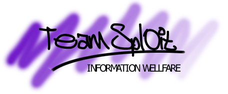

NATO fucks up again
whew. when i heard the news about NATO bombing the Chinese embassy in Serbia,
i thought heaven was falling down... "Oh, sorry, it was a mistake", was the
explanation we heard from NATO spokesmen.
well, they are starting to make quite an awfull lot of mistakes, aren't they ?
they go on bombing innocent people, people who are trying to escape from the
terror at Kosovo, and now the embassy of China. well, i know some people who
just might not be happy with this, and i bet you know them too.
anyways. news agencies such as CNN give the NATO the image of gods. they come
to Kosovo and they will rescue the people there. well from what i've seen and
heard, i don't see where the rescueing part comes in. knowing that the CNN big
boss is also an important weapon manufacturer (or so people told me), maybe
we should not believe all the news CNN brings us, or at least see the other
side of the story.
* IT ALL DEPENDS ON YOU *
( COREL.COM was compromized by team spl0it )
( we are nostalg1c, jay, f0bic and cellbl0ck )
the following sites could also have been owned
since they reside on the same box:
www.corelcomputer.com
www.coreldraw.com
www.officecommunity.com
www.printhouse.com
and more corel related sites
click here for the original page
shouts out to former noid, gH, diranged and all the ones out there who give a fuck about their freedom.